LAPORAN PRAKTIKUM
Praktikum 5: Arsitektur Navigasi, Named Routes dan Bottom Navigation Bar (Flutter)
Pendahuluan
Pada aplikasi yang memiliki banyak layar, pengelolaan perpindahan halaman perlu dirancang dengan baik agar kode tetap rapi dan mudah dirawat. Flutter menyediakan Named Routes, yaitu cara mendefinisikan nama berupa string untuk setiap halaman di dalam MaterialApp, sehingga seluruh rute aplikasi terkumpul di satu tempat dan dapat dipanggil hanya dengan menyebut namanya melalui Navigator.pushNamed(). Cara ini mencegah munculnya spaghetti code ketika jumlah layar semakin banyak.
Selain itu, aplikasi modern umumnya memiliki menu di bagian bawah layar untuk berpindah antar halaman utama. Flutter menyediakan widget BottomNavigationBar untuk kebutuhan ini. Widget tersebut mengontrol tampilan utama (body) berdasarkan tab yang aktif, tanpa berpindah Scaffold. Tab yang aktif disimpan dalam sebuah state (_selectedIndex), sehingga widget penampungnya harus berupa StatefulWidget.
Pada praktikum ini, hasil Praktikum 1 sampai 4 (widget, layouting, form input, dan navigasi) diintegrasikan ke dalam satu aplikasi keuangan (Expense Tracker) yang memiliki tiga tab, yaitu Beranda (Dashboard), Riwayat, dan Profil. Sebagai tugas, dibuat halaman riwayat transaksi, halaman profil, dan halaman login. Sebagai tugas tambahan, seluruh hasil Praktikum 1 sampai 5 digabung menjadi satu project yang menyimpan data pada local storage (SQLite), memiliki fitur register dan login, serta dibuat menjadi file APK.
Tujuan
- Mahasiswa mampu menerapkan
Named Routesuntuk navigasi yang terpusat dan rapi. - Mahasiswa mampu membangun menu bawah (
BottomNavigationBar) seperti pada aplikasi modern. - Mahasiswa mampu mengintegrasikan halaman Dashboard, Riwayat, dan Profil dalam satu wadah (
MainScreen). - Mahasiswa mampu membuat halaman riwayat transaksi, halaman profil, dan halaman login.
- Mahasiswa mampu menyimpan data secara permanen menggunakan local storage (SQLite dan
shared_preferences) sehingga data tidak hilang saat aplikasi ditutup. - Mahasiswa mampu menggabungkan hasil Praktikum 1 sampai 5 menjadi satu project dan menghasilkan file APK.
Alat dan Bahan
- Laptop / Komputer
- Flutter SDK
- Visual Studio Code
- Android SDK (dipasang melalui Android Studio)
- Browser (Chrome) untuk debugging
- Smartphone Android (Samsung Galaxy A12) dengan USB Debugging
- Package
sqflite,path,shared_preferences,crypto, dansqflite_common_ffi_web - Koneksi Internet
Langkah Praktikum
1. Mendaftarkan Named Routes
Pada langkah ini seluruh rute aplikasi didaftarkan di dalam MaterialApp pada file main.dart. Parameter home dihapus, kemudian diganti dengan initialRoute dan routes.
A. Mengubah MaterialApp pada main.dart
Parameter home: DashboardScreen() dihapus, lalu ditambahkan dua parameter berikut.
initialRoute: '/'— Menentukan rute pertama yang dimuat ketika aplikasi dijalankan, yaitu rute'/'.routes— BerupaMapyang berfungsi sebagai tabel peta rute aplikasi. Setiap isinya memasangkan nama rute (string) dengan fungsi yang mengembalikan widget halaman tujuan.'/': (context) => const MainScreen()— Rute'/'menunjuk keMainScreen, yaitu layar yang memiliki tab.'/add': (context) => const AddTransactionScreen()— Rute'/add'menunjuk ke halaman form tambah transaksi.
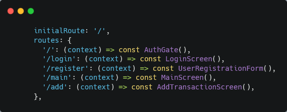
B. Memanggil Rute dari Dashboard
Pada file dashboard_screen.dart (hasil Praktikum 4), logika Navigator.push(context, MaterialPageRoute(...)) pada FloatingActionButton diganti dengan Navigator.pushNamed(context, '/add'). Perintah ini memanggil rute yang sudah didaftarkan di main.dart, sehingga tidak perlu lagi membuat MaterialPageRoute secara manual dan tidak perlu meng-import file halaman tujuan di setiap tempat pemanggilan.
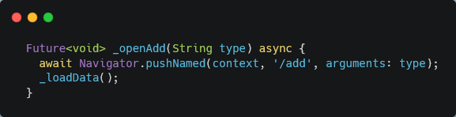
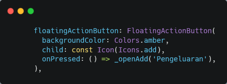
2. Membuat Penampung Tab (MainScreen)
Pada langkah ini dibuat file baru main_screen.dart yang berfungsi sebagai wadah untuk ketiga tab. Class ini dibuat sebagai StatefulWidget karena tab yang aktif akan selalu berubah nilainya.
A. Variabel _selectedIndex
Variabel int _selectedIndex = 0 menyimpan indeks tab yang sedang aktif. Nilai awal 0 berarti tab pertama (Beranda) aktif secara default.
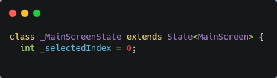
B. List Halaman (_pages)
Variabel final List<Widget> _pages berisi daftar halaman yang akan ditukar sesuai tab. Isinya adalah DashboardScreen() untuk Beranda, widget Center berisi teks sementara untuk Riwayat, dan ProfileScreen() untuk Profil. Urutan isi list harus sama dengan urutan tab pada BottomNavigationBar.
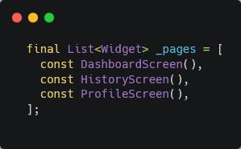
C. Method _onItemTapped
Method ini menerima parameter index dari tab yang diketuk. Di dalamnya, setState() dipanggil untuk mengubah nilai _selectedIndex menjadi index tersebut. Pemanggilan setState() memberi tahu Flutter bahwa ada perubahan data, sehingga tampilan dirender ulang dan halaman yang ditampilkan ikut berganti.
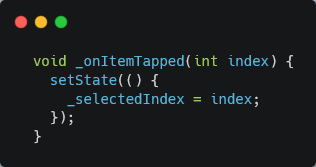
3. Merangkai BottomNavigationBar
Pada langkah ini method build pada MainScreen dilengkapi dengan Scaffold yang memiliki menu navigasi bawah.
A. Menentukan body
Property body: _pages[_selectedIndex] menampilkan widget dari list _pages sesuai indeks tab yang aktif. Karena hanya body yang berganti, Scaffold dan menu bawah tetap berada di tempatnya.
B. Menambahkan BottomNavigationBar
currentIndex: _selectedIndex— Menandai tab yang sedang aktif agar ikon dan labelnya disorot.onTap: _onItemTapped— Fungsi yang dijalankan ketika sebuah tab diketuk. Flutter otomatis mengirim indeks tab ke method_onItemTapped.selectedItemColor: Colors.amber[800]— Mengatur warna tab yang sedang aktif menjadi amber.items— DaftarBottomNavigationBarItemyang masing-masing memilikiicondanlabel, yaitu Beranda (Icons.home), Riwayat (Icons.history), dan Profil (Icons.person).
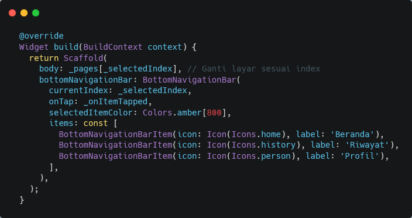
4. Hasil Akhir: Aplikasi Finansial Lengkap
Setelah seluruh langkah selesai, simpan semua file kemudian jalankan aplikasi dengan perintah flutter run. Aplikasi menampilkan halaman Beranda dengan sapaan, saldo, tombol aksi, dan daftar transaksi, serta menu bawah dengan tiga tab. Ketika tab Riwayat atau Profil diketuk, isi layar berganti tanpa berpindah Scaffold, sedangkan tombol + membuka halaman form tambah transaksi melalui rute '/add'.


Tugas: Riwayat, Profil, dan Login
Tugas pada Praktikum 5 adalah membuat halaman riwayat transaksi, halaman profil yang berisi avatar, nama, email, dan tombol logout, serta satu halaman login yang berisi textfield email dan password beserta tombol login. Ketika tombol login ditekan, aplikasi menampilkan halaman utama beserta informasi email yang diinputkan pengguna. Ketiga halaman ini dibuat sebagai file terpisah di dalam folder lib.
A. Halaman Riwayat Transaksi (history_screen.dart)
Halaman ini menggantikan teks sementara "Halaman Riwayat (Kosong)" pada tab Riwayat. Berbeda dengan Beranda yang hanya menampilkan 5 transaksi terakhir, halaman ini menampilkan seluruh transaksi milik pengguna yang sedang login.
StatefulWidgetdaninitState()— Dipakai karena data diambil dari database saat halaman dibuka, lalu tampilan diperbarui dengansetState()._loadData()— MemanggilDatabaseHelper.instance.getTransactions()untuk mengambil transaksi milik user yang sedang login, kemudian menyimpannya ke variabel_transactions._loading— Variabel boolean untuk menampilkanCircularProgressIndicatorselama data masih diambil.- Kondisi data kosong — Jika tidak ada transaksi, ditampilkan teks "Belum ada transaksi".
ListView.separated— Menampilkan daftar yang dapat di-scroll dengan garis pemisah (Divider) antar item. Setiap item berupaListTiledengan ikon kategori (leading), judul, kategori dan tanggal (subtitle), serta nominal berwarna hijau untuk pemasukan atau merah untuk pengeluaran (trailing).onTap— MembukaTransactionDetailScreendengan mengirim data transaksi melalui constructor (hasil Praktikum 4).
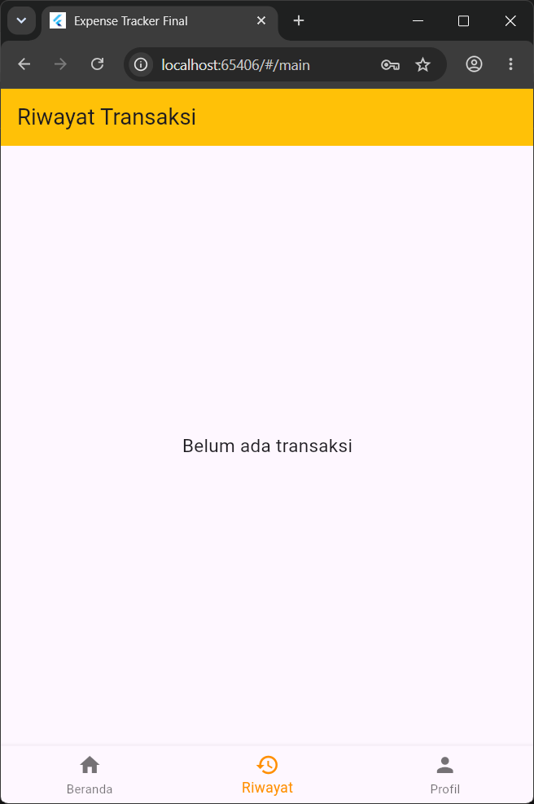
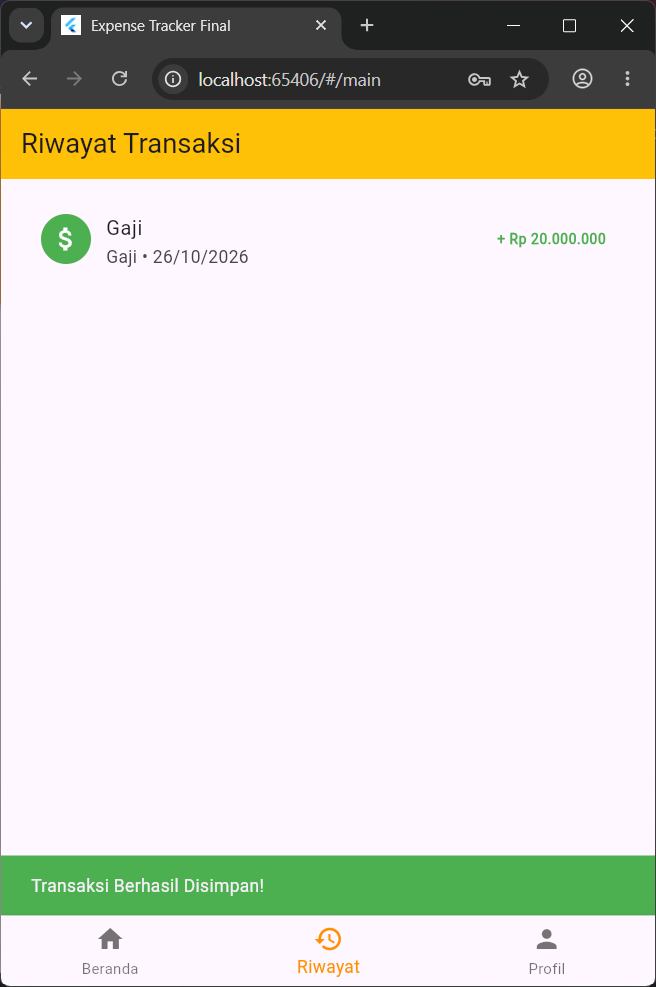
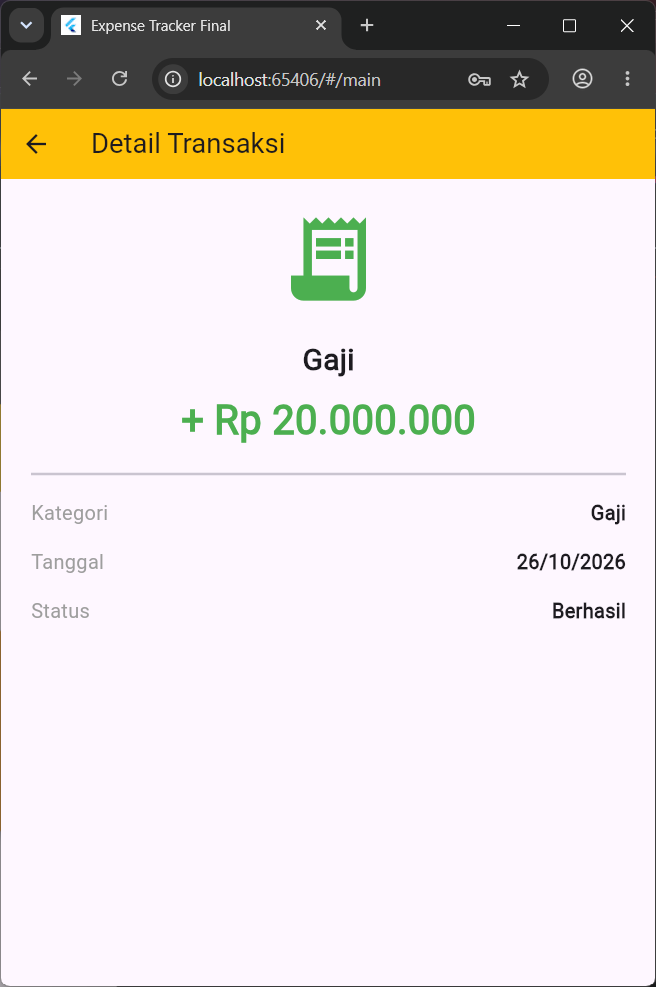
B. Halaman Profil (profile_screen.dart)
Halaman ini menampilkan identitas akun yang sedang login dan menyediakan tombol logout.
CircleAvatar— Menampilkan avatar berbentuk lingkaran dengan ikonIcons.person.Textnama dan email — Nilainya diambil dariSession.currentUser, yaitu data pengguna yang tersimpan saat login.ColumndenganmainAxisAlignment: center— Menyusun avatar, nama, email, dan tombol secara vertikal di tengah layar.- Tombol Logout — Memanggil method
_logout()yang menjalankanSession.clear()untuk menghapus sesi login (di memori dan dishared_preferences), laluNavigator.pushNamedAndRemoveUntil(context, '/login', (route) => false). Parameter(route) => falsemenghapus seluruh halaman sebelumnya dari stack, sehingga pengguna tidak dapat kembali ke halaman utama dengan tombol Back.
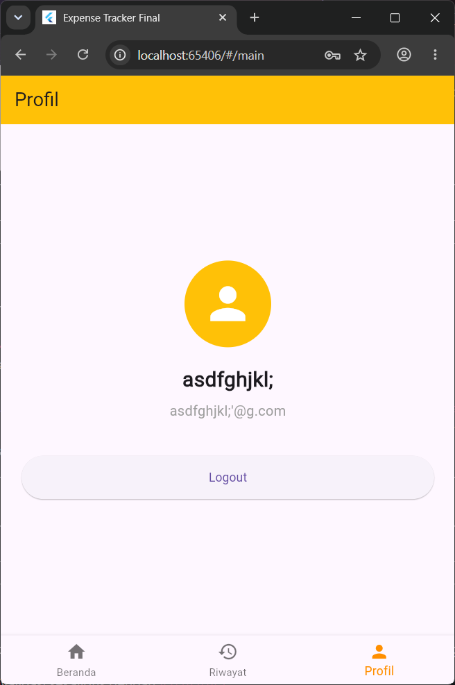
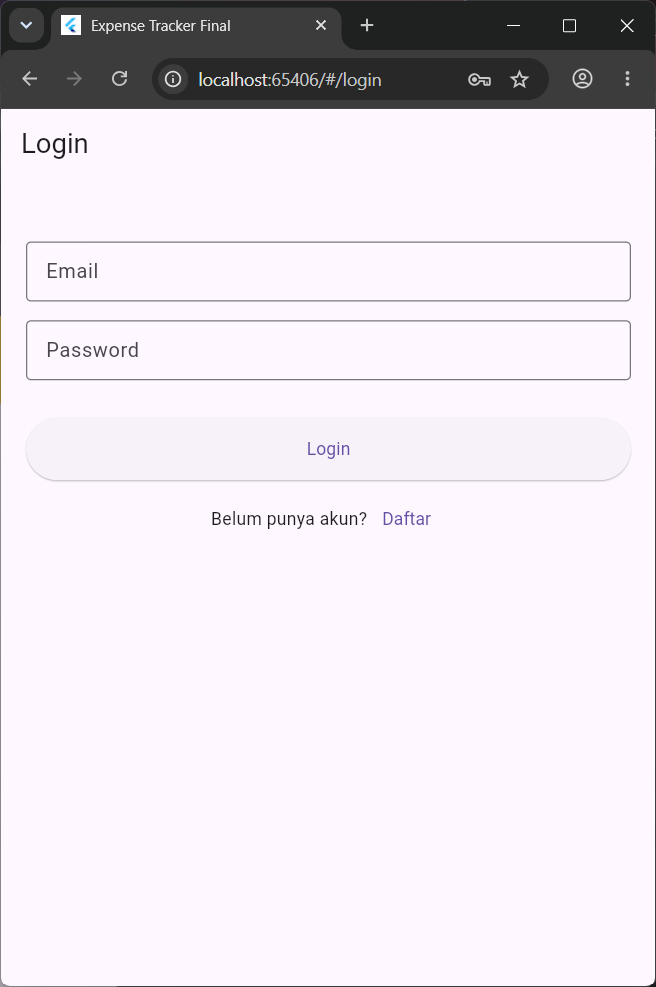
C. Halaman Login (login_screen.dart)
Halaman login berisi dua TextFormField (email dan password) serta satu tombol Login, dan menjadi halaman pertama yang muncul bila pengguna belum login.
FormdanGlobalKey<FormState>— Membungkus kedua inputan agar dapat divalidasi sekaligus denganvalidate().- Email — Menggunakan
keyboardType: TextInputType.emailAddress. Validator memeriksa inputan tidak kosong dan mengandung karakter@. - Password — Menggunakan
obscureText: trueagar teks tersembunyi. Validator memastikan inputan tidak kosong. _login()— Setelah validasi berhasil, memanggilDatabaseHelper.instance.login()untuk mencocokkan email dan password dengan data pada database. Jika tidak cocok, munculSnackBar"Email atau password salah".Session.save(user)danpushReplacementNamed(context, '/main')— Jika cocok, data pengguna disimpan sebagai sesi, lalu halaman login diganti denganMainScreensehingga login tidak dapat dikembalikan dengan tombol Back.- Informasi email pada halaman utama — Email yang diinputkan ditampilkan pada sapaan di halaman Beranda (
GreetingWidget) dan pada halaman Profil. _isLoading— Menonaktifkan tombol dan menampilkan indikator loading saat proses login berjalan.- Tombol "Daftar" — Memanggil
Navigator.pushNamed(context, '/register')untuk membuka form pendaftaran.

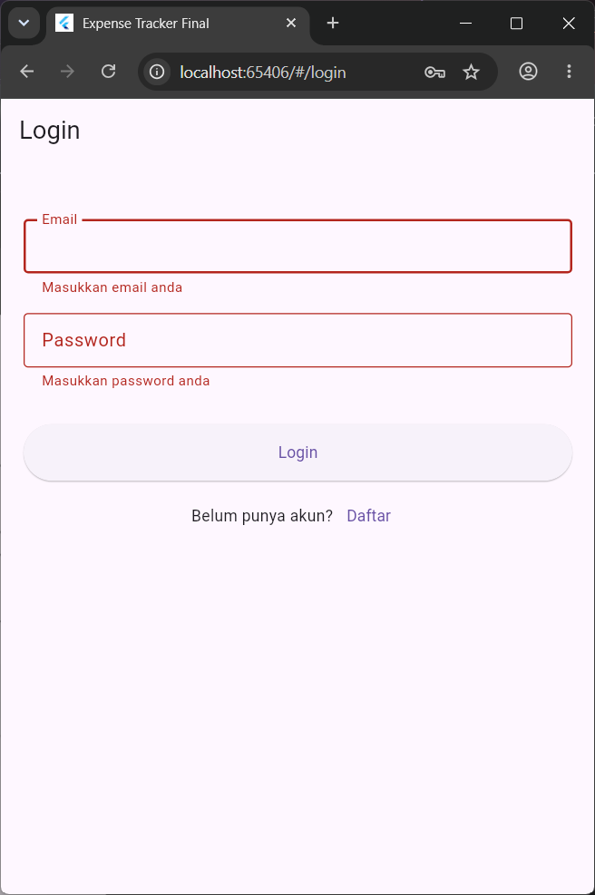
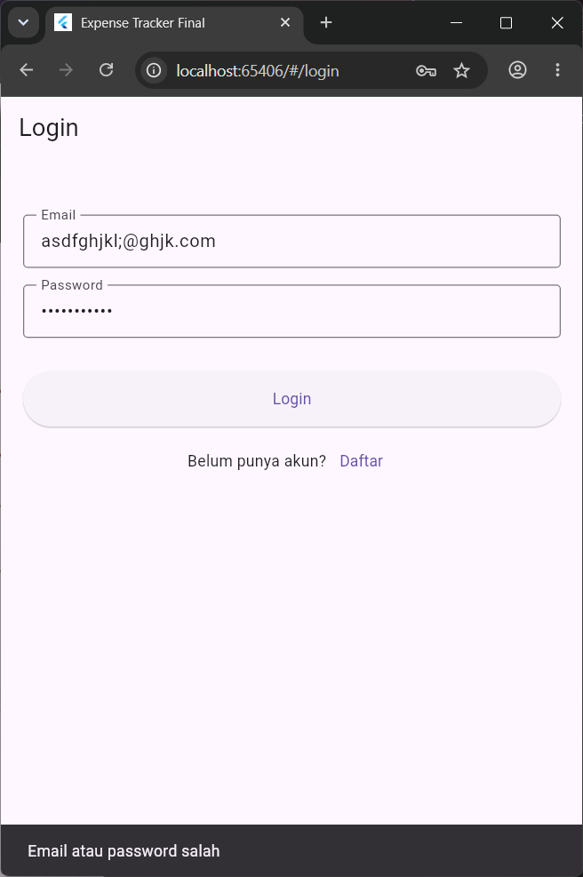
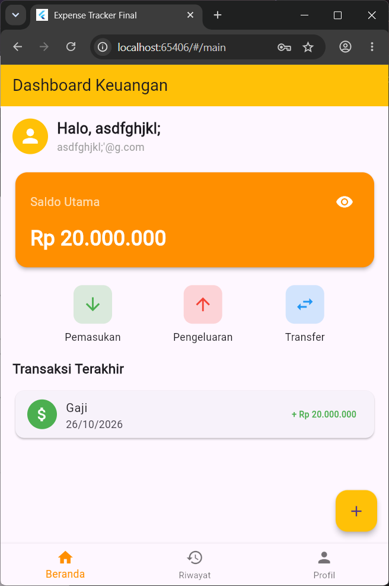
Tugas Tambahan: Penggabungan Praktikum 1 sampai 5
Hasil Praktikum 1 sampai 5 digabung menjadi satu project Flutter. Karena praktikum sebelumnya hanya berisi desain UI, navigasi, dan data statis, ditambahkan local storage agar data yang dimasukkan tidak hilang, ditambahkan form login dan register, dibuat video penjelasan, serta dihasilkan file APK. Seluruh file diletakkan langsung di dalam folder lib.
A. Persiapan Project dan Package
Project dibuat dengan perintah flutter create, kemudian ditambahkan package dengan perintah flutter pub add.
sqflite— Database SQLite lokal untuk menyimpan akun dan transaksi.path— Membantu menyusun lokasi file database melalui fungsijoin().shared_preferences— Menyimpan data kecil berpasangan kunci-nilai, dipakai untuk menyimpan ID pengguna yang sedang login agar sesi bertahan setelah aplikasi ditutup.crypto— Menyediakan algoritma hash SHA-256 untuk mengamankan password.sqflite_common_ffi_web— Menyediakan SQLite versi web agar aplikasi dapat di-debug melalui Chrome.
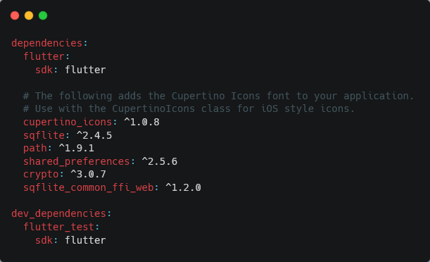
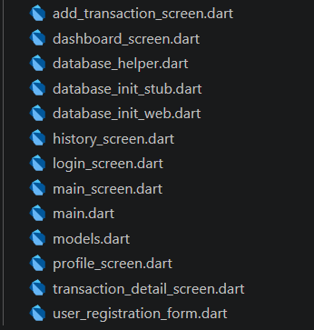
B. Local Storage dengan SQLite
1. File models.dart
Berisi class model agar data tidak berupa Map mentah.
AppUser— Menyimpanid,name, danemailpengguna.TransactionModel— MenyimpanuserId,title,amount,type(Pemasukan/Pengeluaran),category, dandate. GetterisIncomedanamountTextmenentukan jenis transaksi dan membuat teks seperti "- Rp 50.000".toMap()danfromMap()— Mengubah objek menjadiMapuntuk disimpan ke SQLite, dan sebaliknya.formatRupiah()— Mengubah angka5000000menjadiRp 5.000.000.categoryIcon()— Memilih ikon sesuai kategori transaksi.
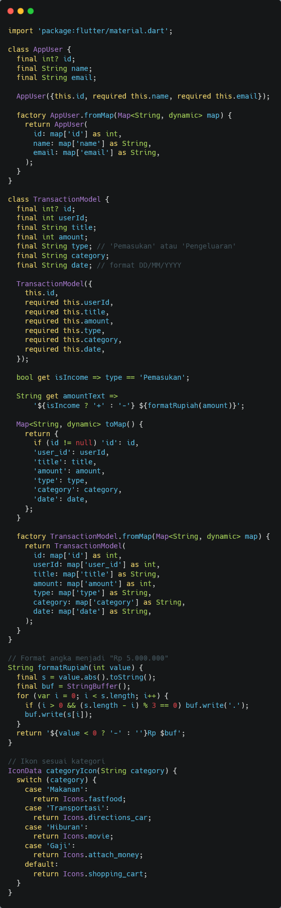
2. File database_helper.dart
Seluruh urusan database dipusatkan di file ini, sehingga halaman lain cukup memanggil fungsinya.
DatabaseHelper._()daninstance— Pola singleton agar hanya ada satu koneksi database selama aplikasi berjalan._initDb()— Membuat file databaseexpense_tracker.dbdan dua tabel melaluiCREATE TABLE, yaituusers(id, name, email unik, password) dantransactions(id, user_id, title, amount, type, category, date)._hash()— Mengubah password menjadi hash SHA-256 sebelum disimpan, sehingga password asli tidak tersimpan di database.registerUser()— Memeriksa apakah email sudah terdaftar, jika belum maka data pengguna disimpan denganinsert. Mengembalikanfalsebila email sudah ada.login()— Mencari pengguna denganqueryberdasarkan email dan hash password. MengembalikanAppUserbila cocok ataunullbila tidak.insertTransaction()dangetTransactions()— Menyimpan transaksi baru dan mengambil seluruh transaksi milik satu pengguna denganorderBy: 'id DESC'(terbaru di atas). Karena difilter denganuser_id, tiap akun hanya melihat transaksinya sendiri.- Class
Session— Menyimpan pengguna yang sedang login pada variabelcurrentUserdan padashared_preferences. Methodsave()dipanggil saat login,restore()dipanggil saat aplikasi dibuka, danclear()dipanggil saat logout.
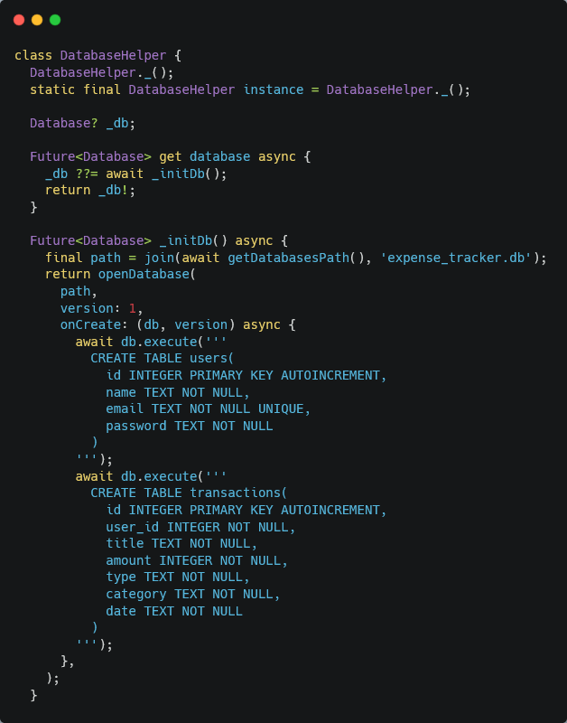
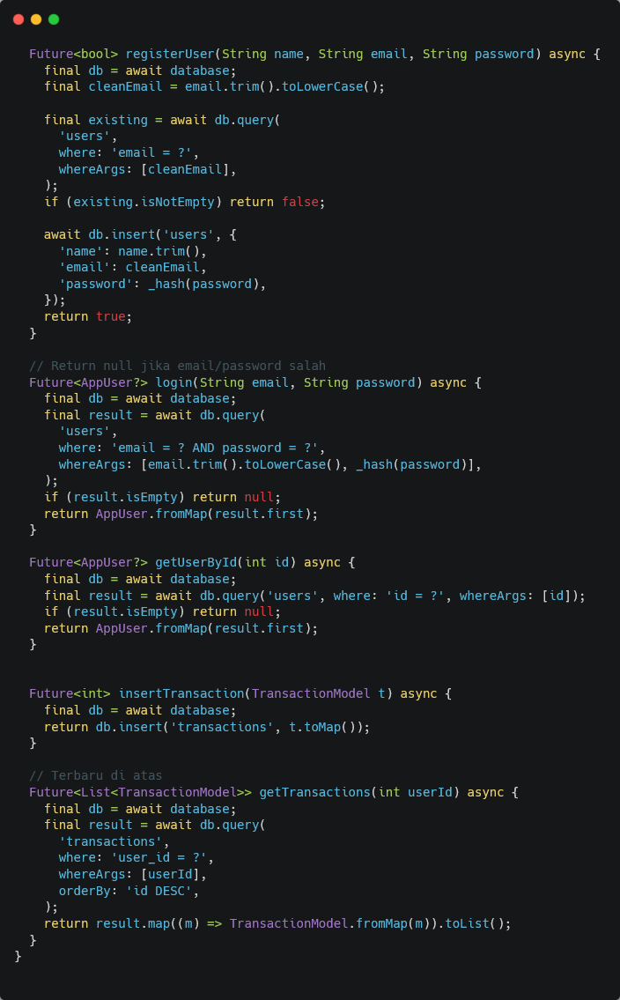
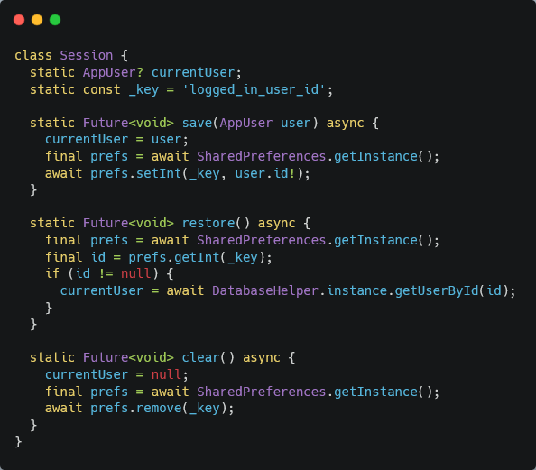
C. Form Register dan Login
1. File user_registration_form.dart
Form pendaftaran dari Praktikum 1 dikembangkan sehingga datanya benar-benar disimpan. Method _submitForm() kini bersifat async: setelah validasi berhasil, memanggil registerUser(). Jika email sudah terdaftar, muncul SnackBar "Email sudah terdaftar". Jika berhasil, muncul pesan sukses lalu Navigator.pop(context) mengembalikan pengguna ke halaman login.
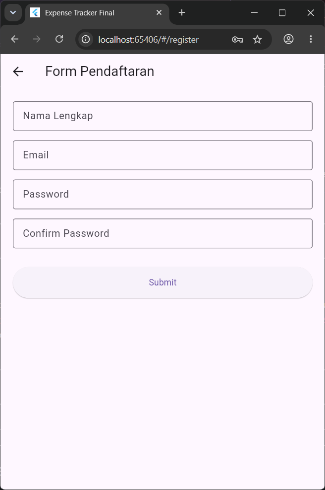
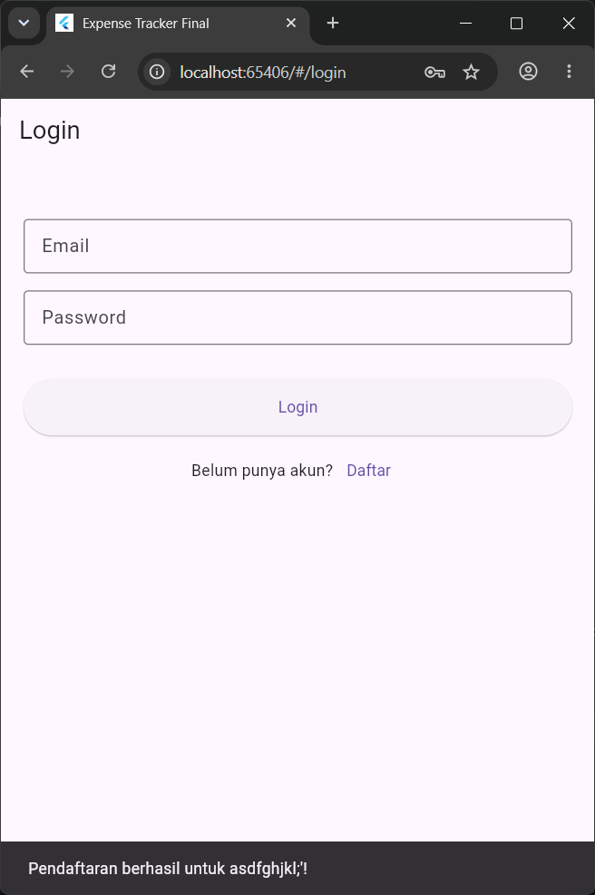
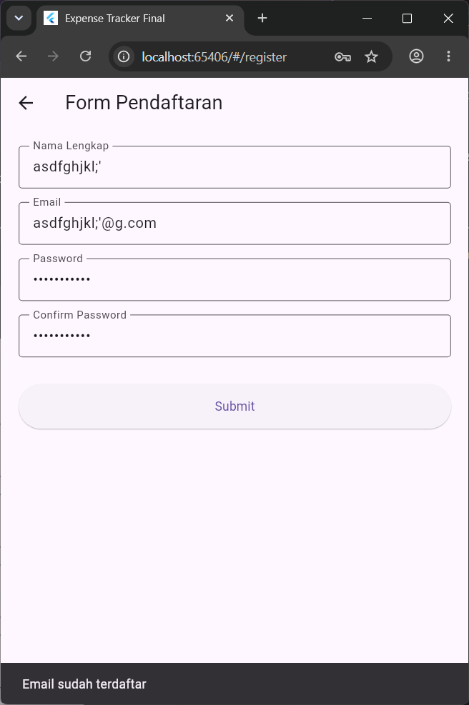
2. File login_screen.dart dan AuthGate pada main.dart
Halaman login dijelaskan pada bagian Tugas. Pada main.dart ditambahkan widget AuthGate yang menjadi rute '/'. Widget ini menggunakan FutureBuilder untuk menjalankan Session.restore(). Selama proses berjalan ditampilkan CircularProgressIndicator. Jika sesi ditemukan, pengguna langsung diarahkan ke MainScreen, dan jika tidak, ke LoginScreen. Dengan cara ini pengguna tidak perlu login ulang setiap kali aplikasi dibuka. Rute pada routes bertambah menjadi '/', '/login', '/register', '/main', dan '/add'.
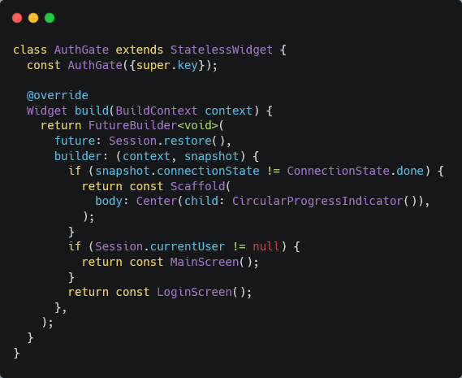
D. Menghubungkan Dashboard, Tambah Transaksi, dan Detail ke Database
1. File dashboard_screen.dart (Praktikum 1, 2, dan 4)
- Diubah menjadi
StatefulWidget— Agar data dapat dimuat dari database dan tampilan diperbarui. _loadData()— Mengambil transaksi milik pengguna yang sedang login._balance— Getter yang menghitung saldo, yaitu jumlah pemasukan dikurangi jumlah pengeluaran, menggantikan saldo statis "Rp 5.000.000".GreetingWidget— Menampilkan "Halo, [nama]" dan email dari pengguna yang login.BalanceCardWidget— Kartu saldo dengan ikon mata dari Praktikum 1 yang kini menampilkan saldo hasil perhitungan.ActionButtonsWidget— Tombol Pemasukan dan Pengeluaran membuka form tambah transaksi dengan jenis yang sudah terpilih, sedangkan tombol Transfer menampilkanSnackBar"belum tersedia" karena tidak memiliki fungsi pada modul.RecentTransactionsWidget— Menampilkan 5 transaksi terakhir dari database, dan mengetuk item membuka halaman detail._openAdd()— MemanggilNavigator.pushNamed(context, '/add', arguments: type). Kata kunciawaitmembuat aplikasi menunggu halaman form ditutup, lalu_loadData()dipanggil agar data langsung diperbarui.
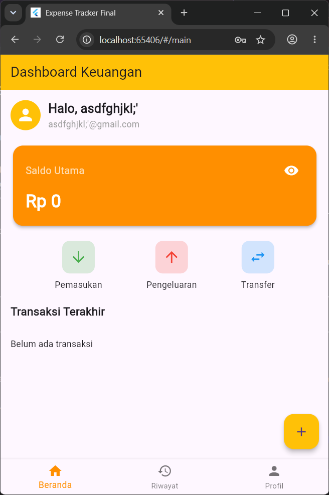
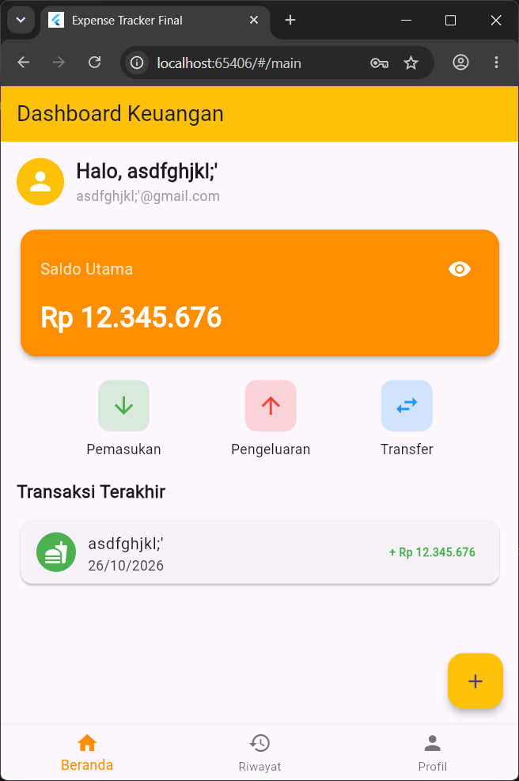
2. File add_transaction_screen.dart (Praktikum 3 dan 4)
- Input Judul, Nominal, dan Tanggal — Tanggal bersifat
readOnlydan diisi melaluishowDatePickerpada tombol plus, dengan formatDD/MM/YYYY. Semua input wajib diisi (validator). - Validator Nominal — Menggunakan
int.tryParse()untuk memastikan nilainya angka dan lebih dari 0. - Dropdown Jenis dan Kategori — Dua
DropdownButtonFormField. Jenis (Pemasukan/Pengeluaran) diperlukan agar saldo dapat dihitung. didChangeDependencies()— Membaca argumen dariModalRoute.of(context)?.settings.argumentssehingga jenis transaksi otomatis terpilih sesuai tombol yang ditekan di Dashboard._save()— Setelah validasi berhasil, memanggilinsertTransaction()untuk menyimpan ke SQLite, menampilkanSnackBarsukses, laluNavigator.pop(context).
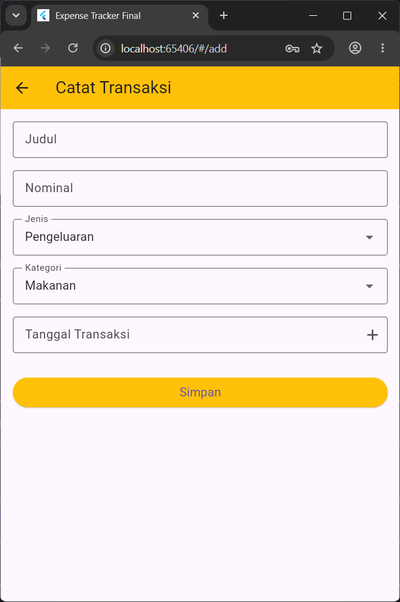
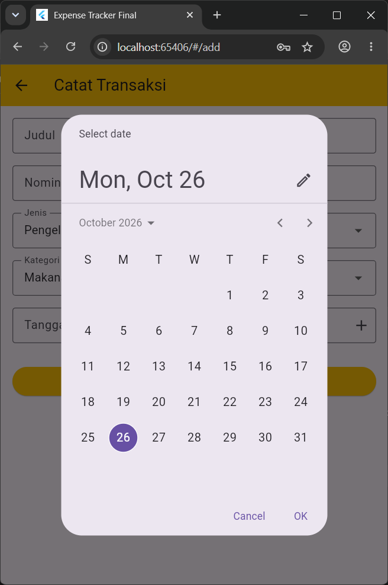
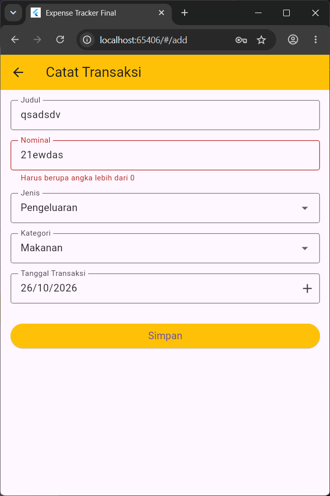
3. File transaction_detail_screen.dart (Praktikum 4)
Menerima data dari halaman sebelumnya melalui constructor dengan kata kunci required. Ditambahkan parameter isIncome yang menentukan warna tampilan, hijau untuk pemasukan dan merah untuk pengeluaran. Method _buildDetailRow() dipakai untuk merapikan baris Kategori, Tanggal, dan Status.
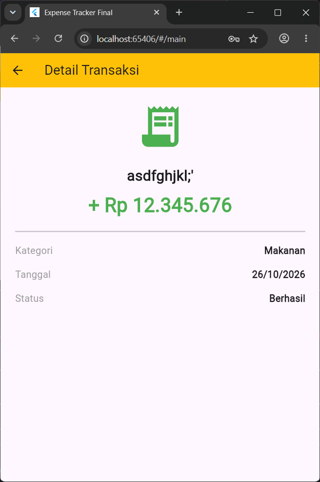
H. Generate File APK
File APK dihasilkan dengan perintah berikut.
flutter build apk --release— Mengompilasi aplikasi dalam mode release menjadi file APK yang siap dipasang.- Lokasi hasil —
build\app\outputs\flutter-apk\app-release.apkdengan ukuran sekitar 54,4 MB. flutter install— Memasang APK langsung ke smartphone yang terhubung melalui USB. APK juga dapat disalin ke smartphone lalu dipasang secara manual.
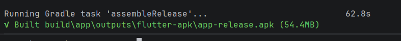
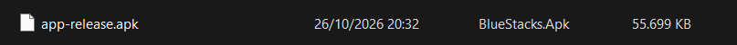
Kesimpulan
Berdasarkan praktikum yang telah dilakukan, dapat disimpulkan bahwa Named Routes membuat navigasi lebih terpusat dan rapi karena seluruh rute didaftarkan pada routes di MaterialApp dan dipanggil cukup dengan Navigator.pushNamed(). Widget BottomNavigationBar yang dikelola oleh StatefulWidget dengan variabel _selectedIndex memungkinkan pengguna berpindah antar halaman utama tanpa berpindah Scaffold.
Pada tugas, halaman riwayat, profil, dan login berhasil dibuat, dan email yang diinputkan saat login ditampilkan pada halaman utama. Pada tugas tambahan, penggunaan SQLite melalui sqflite dan shared_preferences membuat data akun, transaksi, dan sesi login tidak hilang setelah aplikasi ditutup, sedangkan hash SHA-256 mengamankan password pengguna.
Dengan menggabungkan hasil Praktikum 1 sampai 5, dihasilkan satu aplikasi keuangan yang utuh, dilengkapi fitur register dan login, serta berhasil dibangun menjadi file APK yang dapat dipasang pada smartphone Android.